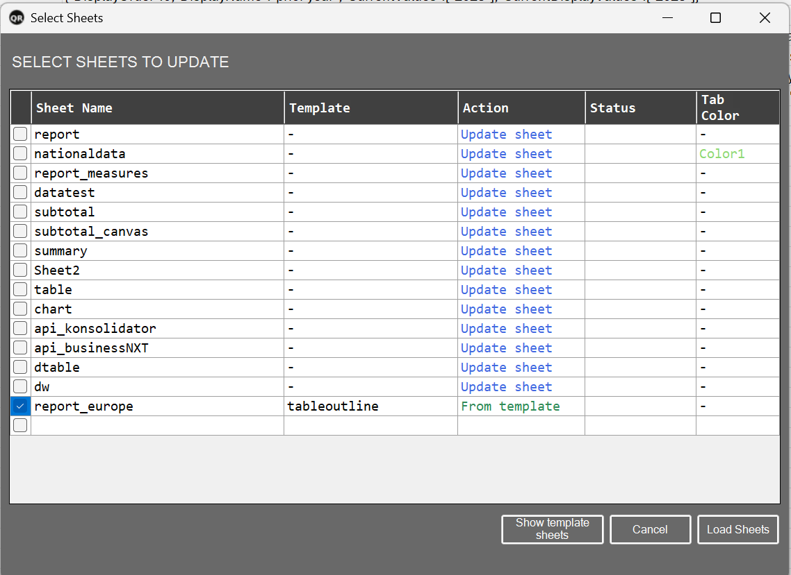

Parameters
Parameters let users change queries, Mini SQL, Mini DAX, API definitions, charts, and Canvas content without editing the underlying text. Definitions are managed in Parameter Manager; user-enabled values appear in the simpler Parameter Input form.

Add and order parameters
- Open Parameters from the QRep Ribbon or select Param in Query Tool.
- Open the advanced manager if Parameter Input is shown first.
- Select Add.
- Enter the parameter name and current value.
- Choose an input type and configure its tabs.
- Check User input if report users should change it.
- Select Save.
Parameter names are referenced as {{name}}. Keep names short and avoid punctuation that could be confused with a property reference.
The order in Parameter Manager controls Parameter Input. Right-click the list to move a parameter Up, Down, First, or Last. The UI checkbox column identifies parameters with User input enabled; click the checkbox directly to enable or disable it.
For Manual list and SQL list parameters, Pick opens the configured selector. The popup uses single selection, checked multi-selection, or a hierarchical tree as appropriate and shows the current selection before it is applied.
Parameter Manager layout
The editor is divided into tabs so that only settings relevant to the selected input type are shown:
| Tab | What it controls | When it appears |
|---|---|---|
| Setup | Input type, user input, blank/multi-select behavior, manual values, sheet scope, list height, and expanding lists. | Always. |
| Lookup | Connection, lookup query, value/display columns, and tree-level columns. | List inputs; the lookup fields are required for SQL list. |
| Text parsing | Prefix/postfix, None handling, item encapsulation, and separator. | Always. |
| Format | Date format or numeric minimum, maximum, increment, and number format. | Date picker or Numeric input only. |
The blue i buttons beside Manual list, Tree level columns, and Text parsing open short examples without changing the parameter. They are useful as an in-form syntax reference.
Common fields
| Field | Purpose |
|---|---|
| Name | Stable token name, for example pyear. |
| Current value | Current raw value or first selected lookup value. |
| Default value | Fallback when no current value exists. |
| Display name | Label shown to the user. |
| Description | Help text below the input control. |
| User input | Include the parameter in Parameter Input. |
| Allow blank | Permit an empty selected value. |
| Multi select | Permit more than one list value. |
| Sheet scope | Restrict visibility to selected worksheets; no selection means all sheets. |
Input types
Text
Use Text for free-form input such as a year, account code, or search term.
WHERE fiscal_year = {{pyear}}
For numeric text, use Raw text parsing. For a SQL text value, choose SQL string so Europe becomes 'Europe'.
Manual list
Use Manual list when choices are stable and do not need a query. Enter comma-separated items, one item per line, or value/display pairs supported by the editor.
EU=Europe
NA=North America
AS=Asia
The stored value can be EU while the user sees Europe.
For a hierarchical multi-select list, enable Hierarchical tree list and enter one complete path per line. Separate levels with >; the final segment is the selectable leaf:
Europe > Western Europe > BE=Belgium
Europe > Nordics > NO=Norway
Asia > East Asia > JP=Japan
This creates Continent → Region → Country. Selecting a parent selects or clears every leaf beneath it. Any number of parent levels is supported. Existing comma-, semicolon-, and newline-separated flat lists remain valid.
For a tree, keep each complete path on its own physical line. Use value=display only on the final leaf when the stored value and caption differ. For example, NO is inserted into the query while Norway is shown to the user. Commas and semicolons are intended for flat lists, not as hierarchy markers.
SQL list
Use SQL list when choices should be loaded from a connection or Excel table.
The Manual list box is disabled for SQL lists. A lookup connection and lookup SQL must be configured before the parameter can be saved.

Configure:
- Lookup connection: named database connection,
table, or another supported source; - Lookup SQL: query returning lookup rows;
- Value column: value inserted into the query;
- Display column: friendly text shown in Parameter Input;
- Hierarchical tree list: show multiple parent levels;
- Tree level columns: comma-separated result columns from root to parent;
- List height: minimum height of the list control.
- Expand height: let the multi-select list or tree use additional vertical space when Parameter Input is resized.
Example lookup:
SELECT
Region,
Continent,
CountryCode,
CountryName
FROM country
ORDER BY Continent, Region, CountryName
For Continent → Region → Country:
- Value column:
CountryCode - Display column:
CountryName - Tree level columns:
Continent, Region
The value/display columns form the lowest leaf. Checking or clearing a parent checks or clears all descendants. Tree selection is intended for multi-select lists.
If several parameters have Expand height enabled, only the first eligible multi-select list in Parameter Manager order expands. Parameters above it remain anchored to the top, while parameters below it remain anchored to the bottom. Reorder parameters in Parameter Manager to choose which list receives the extra space.
Pick and verify list values
Select Pick... in Parameter Manager to test the configured list before saving:
- a single-select parameter shows one selectable value;
- Multi select shows checkboxes;
- Allow blank adds a
(Blank)choice; - the configurable None caption is shown as the first None choice;
- a hierarchical list shows expandable parent nodes;
- checking or clearing a parent applies the same state to all leaves below it;
- the selection summary above the list shows the values currently selected.
The picker respects the same configuration used by Parameter Input, including value/display columns and tree levels. Selecting OK updates the current parameter selection in the manager; select Save to persist it.
Date picker
Use Date picker to show a calendar control. On Format, set the output format. yyyy-MM-dd turns 21 August 2026 into:
2026-08-21
Combine it with SQL string parsing when the source expects:
WHERE order_date = '2026-08-21'
Numeric input
Use Numeric input for a spinner control. On Format, configure minimum, maximum, and increment—for example 1, 10, or 1000.
The Number format controls the text produced by the parameter. It accepts .NET numeric formats, including:
| Format | Example for 1234.5 |
|---|---|
N0 |
1,234 |
# |
1235 |
0.00 |
1234.50 |
#,##0.## |
1,234.5 |
Formatting affects the parameter text sent to SQL, Mini SQL, DAX, APIs, and Canvas queries, so choose a format accepted by the target source.
The Format tab appears only for Date picker and Numeric input. Lookup appears only for a list input.
Sheet scope
No checked worksheet means the parameter is available on every sheet. Check one or more sheets to restrict it.
Example: accountid scoped to Sheet1 appears when the input form is opened for Sheet1, but not Sheet2.
Right-click the sheet list and use Select all or Clear all. Clear all restores the default all-sheets behavior.
Text parsing
Text parsing controls the exact replacement string. Input type is selected only on Setup; there is no second input-type box here.

Scalar modes
| Mode | Raw value | Result |
|---|---|---|
| Raw text | Europe |
Europe |
| SQL string | Europe |
'Europe' |
| DAX string | Europe |
"Europe" |
Quotes inside values are escaped for the selected string mode.
Prefix and suffix around the complete value
With Pre value costcenter=', raw value 100, and Post value ', the result is:
costcenter='100'
Keep parsing as Raw text here because the prefix and suffix already supply quotes.
Multi-value formatting
For values 100, 200, and 300:
| Setting | Value |
|---|---|
| Pre value | costcenter IN ( |
| Separator | , |
| Encapsulation prefix | ' |
| Encapsulation suffix | ' |
| Post value | ) |
Result:
costcenter IN ('100','200','300')
Escapes such as \n and \t are decoded in parsing fields.
Select the i button on Text parsing for a compact explanation of Pre value, Post value, None representation, per-item encapsulation, and Separator. The example line at the bottom of the tab previews how the current settings are concatenated.
None selection
List inputs can offer None. The None representation is emitted instead of values. A common SQL representation is:
1=1
None caption controls what the user sees. It defaults to (None), but can be changed to (All), No filter, or another suitable caption. The caption is only presentation text; None representation remains the value inserted into the query.
Place this parameter where a complete condition belongs:
WHERE {{continent}}
Do not use WHERE continent = {{continent}} with 1=1, because it produces invalid logic.
Parameter references
The normal token resolves the formatted value:
{{continent}}
{{continent.Value}}
Additional properties:
| Reference | Result |
|---|---|
{{name.Display}} |
Formatted display value(s). |
{{name.Current}} |
Current scalar value. |
{{name.CurrentDisplay}} |
Current display scalar. |
{{name.Default}} |
Default value. |
{{name.Name}} |
Normalized name. |
{{name.DisplayName}} or {{name.Label}} |
User-facing label. |
{{name.Description}} |
Description text. |
{{name.Count}} |
Number of selected raw values. |
{{name.Separator}} |
Multi-value separator. |
{{name.Prefix}} |
Per-item encapsulation prefix. |
{{name.Suffix}} |
Per-item encapsulation suffix. |
Names and properties are case-insensitive.
Parameter Input
Only parameters marked User input and matching the current sheet scope are shown.

The form grows when list controls require more vertical space. List height is a minimum; screen space can constrain the final window.
- Save stores values without refreshing the report.
- Save and Load stores all parameters, recalculates dependent workbook formulas, and loads the active report sheet.
- Cancel closes without applying pending edits.
Pending control edits are committed before Save; pressing Tab after typing is not required.
The _control worksheet
Excel-hosted parameters are persisted as set rows on _control.

| Column | Content |
|---|---|
| A | Keyword set. |
| B | Normalized parameter name. |
| C | Current resolved value or an existing Excel formula. |
| D | TRUE for user input; blank/false otherwise. |
| E | Compact JSON with advanced settings. |
Column E can contain display text, selections, input type, lookup definition, hierarchy, list height, scope, parsing, date format, and numeric limits. Older simple set rows remain compatible.
The saved JSON also retains the None caption, number format, expanding-list option, current display values, and hierarchical tree-level settings. Reopening Parameter Manager reconstructs these controls from column E rather than relying only on the formatted value in column C.
Formula-driven parameters
For a non-user-input parameter, an existing formula in column C is preserved. This allows the value to depend on other cells or parameters:
=TEXT(C2,"0000")
For a user-input parameter, saving writes the user's selected resolved value directly to column C. The input form is the source of that value.
Save and Load writes the rows and waits for workbook calculation so formulas depending on the changed parameter are updated before report loading continues.
Generate reports with setreport
setreport creates one or more report sheets from a reusable template sheet. It is useful when the report layout is identical but each generated sheet needs different parameter values, such as one sheet per company, region, period, or department.

Column layout
| Column | Content |
|---|---|
| A | Keyword setreport. |
| B | Name of the template worksheet. |
| C | Name of the report worksheet to create. |
| D | First parameter name. |
| E | First parameter value. |
| F | Second parameter name. |
| G | Second parameter value. |
| H/I onward | Additional parameter name/value pairs. |
The parameter columns always occur in pairs: name, value, name, value. Parameter names refer to set rows on _control. If a named parameter does not yet have a set row, QReports can create the missing value row while processing the report.
Example: several reports from one template
The following setup creates three sheets from Regional template. Each generated report temporarily receives its own continent and pyear values.
| A | B | C | D | E | F | G | |
|---|---|---|---|---|---|---|---|
| 2 | set | continent | Europe | TRUE | |||
| 3 | set | pyear | 2026 | TRUE | |||
| 5 | setreport | Regional template | Report Europe | continent | Europe | pyear | 2026 |
| 6 | setreport | Regional template | Report Americas | continent | North America | pyear | 2026 |
| 7 | setreport | Regional template | Report Asia | continent | Asia | pyear | 2026 |
The template can contain normal QRep Excel Code, parameter references such as {{continent}}, formatting, formulas, charts, and Canvas shapes. The template may be hidden; QReports temporarily makes it available while copying and restores its previous visibility afterward.
Create or refresh generated sheets
- Create the template sheet and test it with ordinary parameter values.
- Add one
setreportrow for every report sheet required. - Select QRep > Load selected.
- Find the generated entries in the dialog. Their action is shown as From template, even when the target sheet does not exist yet.
- Select the required reports and choose Load selected.

For each selected row, QReports applies that row's parameter pairs, copies the template, names the copy using column C, and loads all QRep blocks on the generated sheet. The previous global parameter values are restored after that report finishes.
Important behavior
- If the generated report sheet already exists, it is deleted and recreated from the template. Do not store manual changes only on a generated sheet.
- The template and report sheet names must be different.
_controlcannot be used as the generated report name.- Every generated report name should be unique.
- Keep the source layout and formulas in the template; keep report-specific values in the
setreportpairs. - The same template can be reused by any number of
setreportrows.
Formula Helper can generate the base row using Control setup > Template report setup.
Manual-editing cautions
- Keep column A as
set. - Keep parameter names unique.
- Do not edit column E unless you can repair JSON.
- A formula in column C should normally have User input disabled.
- Saving Parameter Manager removes stale rows for parameters deleted from the manager.
Example: scoped tree lookup
Goal: choose countries only on Regional report and create a SQL condition.
- Name it
country. - Enable User input and Multi select.
- Choose SQL list.
- Return
Continent,Region,CountryCode, andCountryName. - Use
CountryCodeas Value andCountryNameas Display. - Enable the tree and use
Continent, Regionas levels. - Use Pre value
country_code IN (and Post value). - Use a single quote as per-item prefix/suffix and comma as separator.
- Select only
Regional reportin Sheet scope. - Write
WHERE {{country}}in the query.
Selecting Norway and Sweden produces:
WHERE country_code IN ('NO','SE')
Use Query > Parse query to verify the final text.
Troubleshooting
A parameter is missing from Parameter Input
Check that User input is enabled—the UI column should be checked. Then review Sheet scope. No selected sheets means all sheets; one or more checked sheets restrict the parameter to those sheets.
Hierarchy disappears after saving
For a manual tree, enable both Multi select and Hierarchical tree list, and use one >-separated path per line. For SQL list, make sure Tree level columns contains valid column names returned by the lookup query. The value and display columns are leaves and should not also be listed as parent levels.
Pick shows no SQL-list values
SQL list requires both a Lookup connection and Lookup SQL. Run or inspect the lookup query and confirm that Value column, Display column, and every Tree level column exist in the returned table.
The query contains only a comma-separated value list
Check Text parsing. A SQL condition such as continent IN (...) must normally be supplied through Pre value/Post value and item encapsulation, or written around the parameter token in the query. Use Parse query to inspect the final replacement before loading the report.
A dependent control-sheet formula has an old result
Use Save and Load, not only Save. Save and Load writes all parameter values, requests workbook recalculation, waits for dependent formulas, and then continues with report loading.